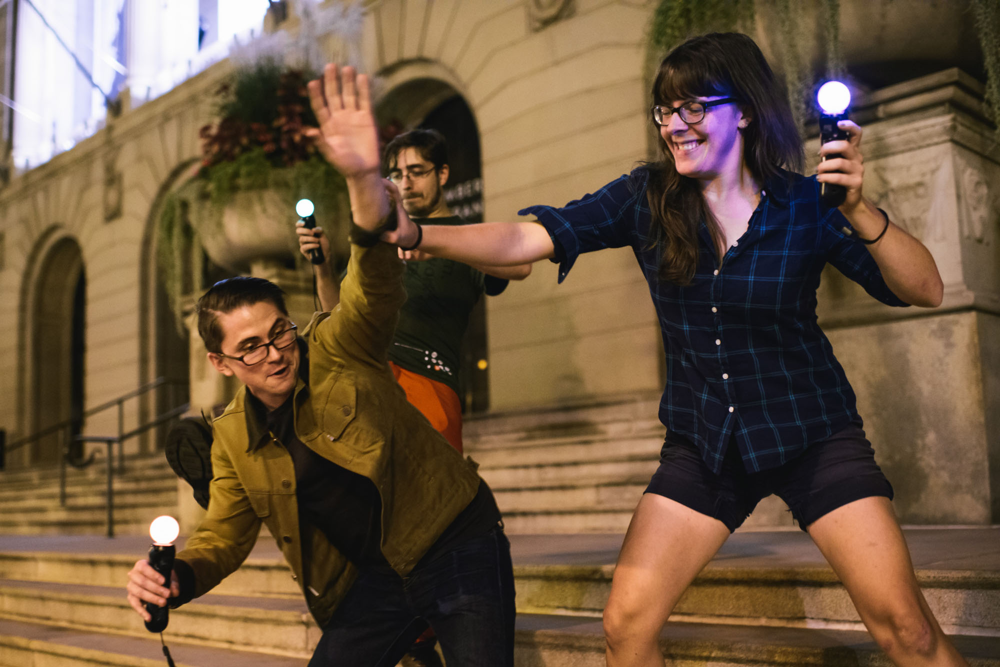

SHHHHHH
This post is unfinished and SECRET, if you've come across it by accident, please don't share it. (though tell me if you spot any mistakes!)
We’re going to make a game!
Our game is going to be based on JSJoust; where players have a controller which they keep still as possible whilst trying to force other players to move theirs. It’s all done in time to Johann Sebastian Bach (hence the JS).
You should definitely check it out. In fact, if you stop reading this post, and go looking for some PS Move controllers to play it - I’d definitely count that as a success.
Hey, welcome back.
We’re going to build a version that doesn’t have any Bach (so, just “Joust”), but using Javascript (so, “JoustJS”). We'll show the player how far they've moved by changing the colour of their screen. When they've moved too much, we'll show that they've lost.
Disclaimer time: if you break your phone, it was't my fault.
Detecting sudden movements
We want to find out when a user makes a sudden movement. Rather than going straight for the orientation events, we’ll use mouse/touch position to make it easier to see what’s going on.
The rule we’re going to implement is: the cursor must cover no further than 300 pixels in 1.5 seconds.
We need to store the cursor position, so lets write some javascript:
class Point {
constructor (x, y, prev) {
this.x = x
this.y = y
this.timestamp = window.performance.now()
if (prev) prev.next = this
}
}
// store the most recent point
let current = null
// helper function for adding mouse/touch
// move listeners
move(
(x, y) => {
current = new Point(x, y, current)
}
)
/*
* current:
* {
* x:…,
* y:…,
* timestamp:…
* }
*/
If you're on a touch device, drag from the circle above to prevent scrolling (it'll help you see what’s going on)
This javascript looks kind of weird… That’s because we’re using class, let, and arrow function syntax from es2015. At some point in the future (probably not 2015) it'll be totally cool to use this in browsers, but for now it’s safest to transform it into es5 using a tool such as Babel.
As well as storing the pointer coordinates, we're storing the time that it was stored using performance.now(), which allows us to check if the point happened in a particular timespan.
We're also linking the last point toward the next, creating a singly linked list. This means that we’ve got no way of accessing previous points - which is actually kinda good, because the browser can detect that, and garbage collect old data.
When we do want to access the data, we can store a reference to the current point, and then any subsequent points are accessible by traversing the .next property.
function* points(p) {
do yield p
while (p = p.next)
}
// our starting point
let start = null
const traverse = (timestamp) => {
requestAnimationFrame(traverse)
if (!current) return
// move forward until we are
// within 1.5 seconds of now
for(start of points(start || current))
if(past.timestamp > timestamp - 1500)
break
}
requestAnimationFrame(traverse)
/**
* points(start):*/
Right. Some things:
- `points` is a generator function which lets us traverse through our stored points in a `for … of` loop.
- We’re calling the render function with `requestAnimationFrame`, this means that the rendering will be called in sync with the browser refresh, and pause when the tab isn’t visible.
- Our
renderfunction is being given a `timestamp` variable, this is the equivalent of calling `window.performance.now()`, which lets us compare to the timestamps generated in Point.
Now that we’ve got access to this data, we can calculate how far the pointer has moved. We’ll define this as the diagonal length of the bounding box of points - that way it’s a bit more robust to wobbly/shaky input. .
const range = (points) => {
let x_min, x_max, y_min, y_max, first = true;
for(let n of points) {
if(first){
x_min = x_max = n.x;
y_min = y_max = n.y;
first = false;
continue;
}
if (n.x < x_min) {x_min = n.x}
else if (n.x > x_max ) {x_max = n.x}
if (n.y < y_min) {y_min = n.y}
else if (n.y > y_max) {y_max = n.y}
}
return {
x: {min: x_min, max: x_max},
y: {min: y_min, max: y_max}
}
}
/*
* Range of points over last 1.5s:
* x: …, y = …
*/
const extent = (range) => ({
x: range.x.max - range.x.min,
y: range.y.max - range.y.min
})
/*
* Extent of those points:
* x = 0, y = 0
*/
const distance (e) =>
Math.sqrt(
Math.pow(e.x, 2) +
Math.pow(e.y, 2)
)
/*
* Distance covered:
* 0
*/
Now we've got the distance, we can use it to implement our "too fast" rule.
// scale the distance, so we can use
// different rules later
const scale = (d) => Math.min(1, d / 300)
const tooFast = (s) => s === 1
/*
* scaled: _
* toFast: _
* */
Great.
Now we've got the data we need for the game, we just need to display it to the user
Colours
Because it's christmas, the transition will be from green (all good) to red (too fast). We'll need a function that converts our distance to a colour.
Colour interpolation can be kind of tricky; in our case, changing the rgb components of #f00 to #0f0 will result in a bit of a murky brown bit in the middle.
One way around this is to use HSL colour space, varying the hue from green (120) to red (0) and keeping the brightness and saturation constant. This also means the colour will sweep through yellow and orange (which are also pretty christmassy).
const colour =
d => `hsl(${~~((1-d) * 120)}, 100%, 45%)`
/*
* _
*
*/Cool.
Movement
Right, we've got all that stuff now - lets use it to track the movement of our device.
We can listen for deviceorientation events in our browser. This tells us which way the device is pointing through the event gamma, alpha & beta properties.
{
gamma: _,
alpha: _,
beta: _,
timestamp: _
}To emulate some device orientation events, drag the red circle above
We can use these properties to tell how far the device has rotated with the same functions we had before that we did before (with a little bit of updating to support a third property).
/*
* orientation points:
*
* distance: …
*/
There’s a problem - when the alpha goes past 360 degrees, it’ll continue on from 0, which causes a big jump in distance, and makes us falsely detect a sudden movement.
We can get around this by mapping our values to 0→2Π, then pressing the Math.Sin key on our calculators. This means that 0 & 360 will both become 1, and 180 will become -1. It's not a terribly great approach for a number of reasons - but it'll do the job.
const PI2 = 2 * Math.PI
const convert = p => ({
alpha: Math.sin(PI2 * (p.alpha / 360)),
beta: Math.sin(PI2 * (p.beta / 360)),
gamma: Math.sin(PI2 * (p.gamma / 180))
})
/*
* converted:
* gamma = _
* alpha = _
* beta = _
*/
Now our distance doesn't jump around. Though it's a lot smaller than before (-1 -> 1), so we can update our `scale` function to reflect that.
Game state
It's not quite a game yet, for that we need to give players a way to start playing, and to lose. We can think of this as a series of states:
[ready, started, lost]And some transitions between the states:
[start, lose]There's a depressing absence of `won/win` here. That's because our devices aren’t connected together, so we can’t really tell if there is anyone else left. I'll be talking about this bit at Frontier Conf in March - you should come along.
Now we've got the model We can model this game logic with something like:
const READY = 1,
STARTED = 2,
LOST = 4
let state = READY
function start () {
if(state & READY | LOST) {
hideButton()
state = STARTED
}
}
function lose () {
if(state & STARTED) {
showButton()
state = LOST
}
}
// state = READY
done!
The rest of the owl
Now we can add some more stuff:
- some html - because it’s a webpage
- a manifest file - so we can launch in fullscreen and lock the orientation
- a cool little script by Max to change the heading colour to make the url bar awesome
- Vibrate and Audio feedback so you know when you’ve lost
- a service worker - to allow this to all happen offline.
- A big button to take you to it